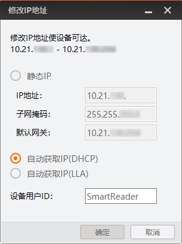
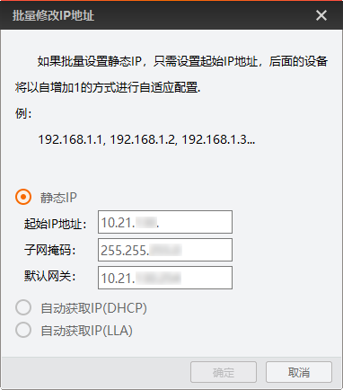

IP配置工具可对读码器的IP地址进行配置。该工具支持同时配置多个读码器的IP地址。IP配置主要用于对读码器的IP分配方式及IP地址进行设置，使读码器和安装IDMVS的PC处于同一网段，从而通过IDMVS连接读码器进行采图及读码。故完成读码器的IP配置是IDMVS连接读码器的前提条件。
读码器状态为可用或不可达状态。
单击GigE可显示所有网络接口下的读码器。该工具默认以GigE方式显示读码器。
工具默认显示读码器的型号名称、设备用户ID、序列号、状态、IP配置、IP地址、子网掩码、厂商。
关于各类信息的介绍具体如下：
读码器具体型号
读码器的User ID参数内容
若该参数无内容，则此处不显示。
读码器序列号
读码器的Mac地址
读码器状态，分为可用、占用和不可达3种。
可用：读码器与PC在同一网段，且未被任何应用（包括IDMVS)连接。
占用：读码器与PC在同一网段，但被其他应用（例如IDMVS）连接。
不可达：读码器与PC不在同一网段。
读码器的IP配置类型，分为静态IP、自动获取（DHCP）、自动获取（LLA）3种类型。
读码器当前的IP地址
读码器的子网掩码
读码器的默认网关
读码器的生产厂商
读码器当前固件程序的版本号
显示IP配置结果。
IP配置成功：显示IP配置成功。
IP配置失败：显示修改IP地址失败，并提供相关错误信息。
该工具支持多种方式选择读码器。
在工具右侧直接双击具体读码器。
此方法仅适用于配置单个读码器的IP。
在工具右侧先勾选一个或多个读码器，再单击修改IP。
单个和多个读码器修改IP的操作略有差异。
单个读码器：可同时设置IP配置类型和设备用户ID。

IP配置类型选择静态IP时，需自行设置IP地址、子网掩码和默认网关。
多个读码器：仅支持设置IP配置类型。

IP配置类型选择静态IP时，需自行设置起始IP地址、子网掩码和默认网关。
完成读码器的IP配置后，即可通过IDMVS连接读码器，并进行采图、读码等操作。